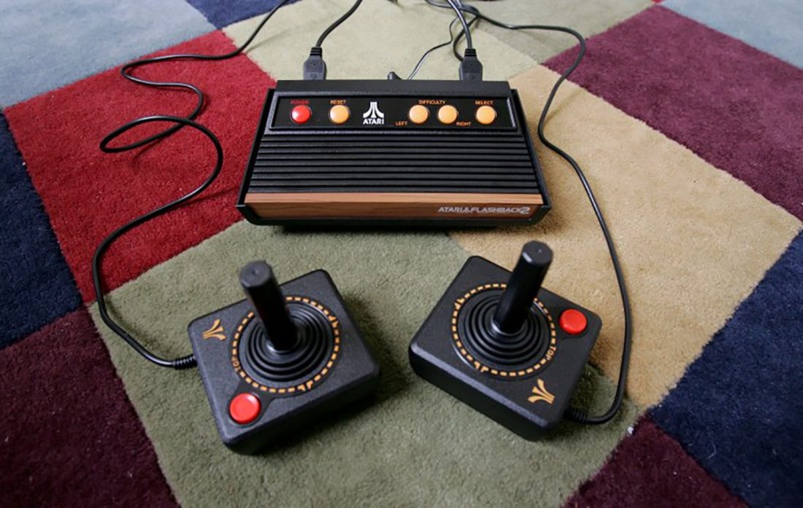

La Historia de los videojuegos
Introducción
Para empezar en está investigación, hablaremos sobre las fechas donde más sobresalio y donde enmpezo a ser más revelante para la sociedad. Anteriormete desde 1950 ya habian aparaecido los primeros juegos, pero no seria en los principios de los años de 1980, que la empresa Norteamericana Atari llego y tuvo que compartir su dominio en la industria del videojuego con dos compañías llegadas de Japón: Nintendo (con su famosa consola NES) y SEGA (con la Master System). Paralelamente, surgió una generación de ordenadores personales asequibles y con capacidades gráficas que llegaron a los hogares de millones de familias, como fueron el Spectrum, el Amstrad CPC, el Commodore 64 o el MSX. A partir de entonces, los videojuegos empezaron a convertirse en una poderosa industria. Fue además una época muy creativa para los desarrolladores de videojuegos; muchos de la principales géneros que existen hoy en día (conducción, lucha, plataformas, estrategia, aventura...) tomaron forma en esta década. Por otra parte, aparecieron también las primeras consolas de bolsillo, también conocidas como "Maquinitas", que aunque hasta la llegada de la Game Boy de Nintendo (En 1989) solo ejecutaban un juego cada una, este por el sistema dde cartuchos que tenia (Formato fisico de un Juego), alcanzaron gran popularidad entre los más jóvenes.

En los primeros inicios desde que los videojuegos aparecian como la inovacion en su epoca, desde las grandes decadas de los 80s y 90s donde las maquinas y consolas tuvieron un gran Impacto en la sociedad; hasta los días actuales, consolas más potente, la realidad virtual, mejoras en rendimiento, lo visual y más; donde estos habian llegaron a lograr grandes cambios e inovaciones en los estandares de las industrias de la creación y cratividad. Simpre se a intento en poder expandir estas caracteristicas a nuevos publicos y por lo tanto nuevos generos, tambien no solamente basandose en jugabilidad; sino tambien expandiendose y llegando a la creación de grandes historias y momentos especiales para las personas, y que han llegado a traspasar incluso a producciones cinematograficas como peliculas o series. Más adelate hablaremos en respeto de estos.
Los años 1990 traen el salto a la tecnología de 16-bit (como la SNES y la Mega Drive), lo que traía consigo importantes mejoras gráficas.En estos años la empresea gigante Sony llega en escena con su primera PlayStation (1994), mientras Nintendo y Sega actualizan sus máquinas (Nintendo 64 y Sega Saturn). En cuanto a las computadoras, el progreso de los PC termina por barrer del mapa a los demás sistemas salvo el de Apple. Aparecen juegos cada vez más avanzados tecnológicamente, como los juegos de tiradores, también llamados shooters en 3D. Estos comenzaron siendo en tercera persona pero a través de la implementación de técnicas de cámara en primera persona, se convirtieron en lo que a día de hoy se denomina Juegos de tiradores en primera persona o FPS. En el año 2002 entra Microsoft en el sector de las videoconsolas con su Xbox, En 2001 se lanza la Gamecube y en el 2006 Nintendo lanza su innovadora Wii. Entretanto, Sony actualiza su exitosa PlayStation (versiones II y III), y en los PC, gracias a la expansión del Internet, cobran protagonismo los juegos en línea y multijugador. Por último, en la década de 2010 emergen como plataformas de juegos los dispositivos táctiles portátiles, como los teléfonos inteligentes y las tabletas, llegando a un público muy amplio. Por otro lado, varias empresas tecnológicas empiezan a desarrollar cascos de realidad virtual, que prometen traer nuevas experiencias al mundo del entretenimiento electrónico.
Continuando con lo que habiamos empezamos, esto llevo e hizo que las industrias de los juegos fueran cada vez optando por caminos diferentes para asi llegar a explorar nuevas opciones y evitar la repeticion en las formulas o conceptos de la creación y desarrolo de los juegos. Esto llevo a acostumbrar a las nuevas generaciones en reclamar inovaciones o que no llegara a atraer a todos, sin conta que el pasar del timpo más juagadores aparecian, las industrias y desarroladoras de los videojuegos tenian que encontra un modo de atraer a esta sociedad nueva, asi que ellos decidieron en probaron nuevos caminos y reccorridos para experimentar, esto con el fin de adapatarse, lo que llegaro a hacerlo bien durante todos estos años con uno que otro incoveniete con sus comunidades, pero esto no les inpidie en mejorar, ya sea en la tecnologia, modoalidades de juegos, en lo visual y más.

Videojuegos
Se que es inecesario el preguntar esto en realidad, pero hay gente que no conoce una buena definicion de lo que es un Videojue, no es muy complicado en enteder, ya que es pósible que vieron por lo menos uno. Aunque al día de hoy es más comun de lo que parese, a diferencia de los primeros años desde que empezaban a salir era muy pocos conocidos. Pero... ¿Sabes cual es la definicion correcta de Un Videojugo?.
Un videojuego es un juego electrónico en el que una o más personas (Jugadores) interactúan mediante un controlador (Mando), con una pantalla o un dispositivo que muestra imágenes de video. Este dispositivo, conocido genéricamente como "Plataforma", puede ser una computadora, una máquina de arcade, una videoconsola o un dispositivo portátil, como por ejemplo un teléfono móvil, teléfono inteligente o tableta. La industria de los videojuegos es una de las principales en el mundo del arte y del entretenimiento, y a logrado a llegar a varios dispositivos electron.
Al dispositivo de entrada, usado para controlar un videojuego se le conoce como controlador o mando, y varía dependiendo de la plataforma. Por ejemplo, un controlador podría únicamente consistir de un botón y una palanca de mando o joystick, mientras otro podría presentar una docena de botones y una o más palancas, lo que llamamos mando. Los primeros juegos informáticos solían hacer uso de un teclado para llevar a cabo la interacción, o bien requerían que el usuario adquiriera un mando con un botón como mínimo. Generalmente los videojuegos hacen uso de otras maneras, aparte de la imagen, de proveer la interactividad e información al jugador. El audio es casi universal, usándose dispositivos de reproducción de sonido, tales como altavoces y auriculares.
El Desarrollo de los Videojuegos
Introducción
El mundo de los videojuegos representa una excelente oportunidad laboral para los profesionales bien preparados, o de poder crear un proyecto que podría llegar a las personas, donde podemos contar nuestras historias. Aunque cada caso es diferente, y los videojuegos están especialmente sujetos a cambios y evoluciones, es útil intentar seguir estructuras y marcos para que los proyectos sigan funcionando de manera eficiente y los proyectos avancen hacia el objetivo final de completarse. Las etapas más aceptadas del desarrollo de un videojuego son las siguientes:
- 1. Planificación
- 2. Pre-producción
- 3. Producción
- 4. Pruebas
- 5. Pre-lanzamiento
- 6. Lanzamiento
- 7. Post-producción

Planificación
Antes de ponerse a escribir una historia, a diseñar los personajes o escenarios o a escribir una línea de códigos, debemos tener una idea para nuestro videojuego, tenido en cuenta que al día de hoy existen diversidad de géneros de videojuegos, además de los rumbos que puede tener la historia como jiros en la trama, también la atmosfera donde nosotros queremos trasmitir las sensaciones que deseemos al usuario. Esta es la primera parte de la etapa de planificación y las raíces de las que crecerá cada videojuego.
- - ¿Qué tipo de videojuego estamos produciendo?
- - ¿Será en 2D o 3D?
- - ¿Cuáles son algunas de las características clave que debe tener?
- - ¿Quiénes son sus personajes?
- - ¿Cuándo y dónde tiene lugar?
- - ¿Quién es nuestro público objetivo?
- - ¿En qué plataforma estamos construyendo esto?
Siendo una prueba de concepto, que toma todas las ideas que se han generado y ver como de viables son para su desarrollo o para que el estudio de juegos las produzca. A partir de ahí se deberán responder preguntas adicionales, como:
- - ¿Cuál es el coste estimado para desarrollar este juego?
- - ¿Tenemos las capacidades tecnológicas para construirlo?
- - ¿Necesitaremos un nuevo motor de juego?
- - ¿Cómo de grande tendrá que ser nuestro equipo?
- - ¿Necesitaremos contratar actores de voz y escritores externos?
- - ¿Cuál es nuestro plazo estimado para el lanzamiento?
- - ¿Cómo lo vamos a monetizar?
Pre-producción
La siguiente etapa del desarrollo del juego, llamada preproducción, hace una lluvia de ideas sobre cómo dar vida a las muchas ideas presentadas en la fase de planificación, si como será programado, si tendrá música, si será demasiado gráfico, etc. Siendo que para un soloAquí es donde los escritores, artistas, diseñadores, desarrolladores, ingenieros, líderes de proyectos y otros departamentos cruciales colaboran en el alcance del videojuego y dónde encaja cada pieza del rompecabezas. A partir de aquí, es común que los estudios realicen prototipos de personajes, entornos, interfaces, esquemas de control y otros elementos en el juego para ver cómo se ven, se sienten e interactúan entre sí. Este es esencialmente el momento «veamos con qué estamos trabajando» antes de pasar al desarrollo del desarrollo: la producción.
Producción
La mayor parte del tiempo, el esfuerzo y los recursos dedicados al desarrollo de videojuegos son durante la etapa de producción. Esta también es una de las etapas más desafiantes del desarrollo de videojuegos.
En el desarrollo de videojuegos, no es raro que segmentos enteros de un juego (meses de trabajo) se eliminen después de que se complete. Puedes imaginar lo frustrante que esto es para los empleados involucrados. Estos tipos de cambios generalmente se mencionan en la etapa de prueba.
Pruebas
Cada característica y mecánica en el juego necesita ser probada para el control de calidad. Un juego que no ha sido probado exhaustivamente es un juego que ni siquiera está listo para un lanzamiento Alpha. Incluso hay diferentes tipos de jugadores de prueba. Algunos jugadores de prueba realizan pruebas de estrés al chocar con paredes cientos, si no miles de veces, en un intento de «romper» el juego. Otros jugadores prueban pruebas de «factor divertido» para ver si el juego es demasiado difícil o demasiado fácil, o completan todo el juego para ver si fue lo suficientemente satisfactorio. Sin un «factor divertido», el juego no venderá muchas copias.
Después de innumerables horas de pruebas e iteraciones, el juego debería estar listo para un lanzamiento tardío Alfa o Beta, dependiendo de cuán pulidas sean las características del juego. Esta es la primera vez que el público tendrá en sus manos el juego.
Pre-lanzamiento
La etapa previa al lanzamiento es un momento estresante para los estudios de juegos. Pueden surgir preguntas de dudas al preguntarse cómo reaccionará el público a su primer producto funcional. “¿Pensarán que nuestro juego es divertido? ¿Van a encontrar nuevos errores? ¿Qué tipo de cobertura mediática vamos a obtener de esto? Pero antes de que se publique una copia Beta formal, el juego requerirá algo de marketing. Después de todo, ¿de qué otra manera la gente aprenderá al respecto?
Los estudios independientes no siempre tienen el lujo de presupuestos de marketing fuertes para atraer la atención a sus juegos. Afortunadamente, el crowdfunding y la publicidad podrían ser igual de fructíferos. El envío de copias Beta de acceso temprano a las principales personalidades y Youtubers para que puedan transmitir en vivo a sus audiencias es un método común para estudios independientes.
Lanzamiento
Además de la eliminación de errores, los desarrolladores suelen pulir el juego tanto como sea posible antes de su lanzamiento. Quizás las correas de cuero del personaje pueden ser más texturizadas. Finalmente vamos a hacer que esos árboles se balanceen con el viento. Este tipo de cambios, aunque menores, pueden ser importantes para hacer que un videojuego sea más inmersivo.
Post-producción
El lanzamiento posterior es uno de los momentos más emocionantes para cualquier estudio de juegos. Años de arduo trabajo finalmente han valido la pena, y las ventas de videojuegos están llegando (con suerte). Pero incluso ahora, todavía hay trabajo por hacer. No es raro que los videojuegos se inicien con lotes de errores menores. Los primeros meses durante la etapa posterior al lanzamiento generalmente se dedican a identificar y eliminar estos errores. Los estudios de juegos también dependen de que los jugadores envíen informes de errores o denuncien errores en foros en línea. Todo esto es parte del soporte posterior al lanzamiento.
Otra parte del postlanzamiento es proporcionar actualizaciones periódicas de software para el juego. Estas actualizaciones van desde parches para equilibrar el juego hasta nuevo contenido descargable o DLC. Lanzar contenido nuevo es común en la industria de los juegos de hoy porque aumenta el valor de repetición y el atractivo de un juego. Nuevos niveles, argumentos y modos multijugador son solo algunas de las muchas opciones de DLC que un estudio de juegos podría explorar
Tiendas de videojuegos
¿Donde?
Puedes comprar videojuegos en tiendas especializadas como GameStop, en línea a través de plataformas como Steam, Epic Games Store, PlayStation Store, Xbox Store, Nintendo eShop, o en grandes minoristas como Amazon, Walmart, Best Buy, entre otros. Pero tenemos que tener en cuenta las plataformas dode podemos jugar nuetro videojuego deseado. Hay varias plataformas de videojuegos, incluyendo consolas como PlayStation, Xbox, Nintendo Switch, así como servicios de PC como Steam, Epic Games Store, Origin, Ubisoft Connect, entre otros. Además, existen plataformas móviles para juegos en dispositivos iOS y Android. Cada una tiene su propia biblioteca de juegos y características únicas.

Ahora, si somos principientes en este mundo virtual, ¿Por donde comenzamos? Que podemos porbar primero. Hay que tener en cuenta que existen muchos géneros de videojuegos, cada uno con sus propias características y mecánicas distintivas, siendo que muchos tenga una experienciadiferente y que se adapte a tus gustos. Algunos de los géneros más comunes incluyen:
- 1. *Acción:* Juegos que enfatizan la velocidad, los reflejos y la coordinación mano-ojo.
- 2. *Aventura:* Juegos que se centran en la exploración, la narrativa y la resolución de acertijos.
- 3. *Estrategia:* Juegos que requieren pensamiento estratégico y planificación.
- 4. *RPG (Rol Playing Games):* Juegos que involucran el desarrollo de personajes y la toma de decisiones.
- 5. *Disparos (Shooter):* Juegos que se centran en disparar a enemigos u objetivos.
- 6. *Deportes:* Juegos que simulan deportes reales o ficticios.
- 7. *Puzzle:* Juegos que ponen énfasis en la resolución de problemas y acertijos.
- 8. *Plataforma:* Juegos que implican saltar y correr a través de niveles.
- 9. *Survival:* Juegos en los que el jugador debe sobrevivir en un entorno hostil.
- 10. *Simulación:* Juegos que simulan actividades de la vida real, como simuladores de vuelo o simuladores de vida.
Estos son solo algunos ejemplos, ¡hay muchos más! Y muchos juegos combinan elementos de varios géneros siendo que lo que estas viendo es una pisca de lo que pdorian llegar a ser.

Ademas, los videojuegos se pueden clasificar de diversas maneras:
- 1. *Por género:* Como mencioné antes, se clasifican en géneros como acción, aventura, estrategia, etc.
- 2. *Por plataforma:* Se dividen según la plataforma en la que se juegan, como consolas (PlayStation, Xbox, Nintendo), PC o móviles (iOS, Android).
- 3. *Por edad:* La ESRB (Sistema de Clasificación de Contenidos de Entretenimiento) clasifica los juegos según la edad recomendada, dividiéndolos en categorías como "Todos", "Adolescentes", "Mature", etc.
- 4. *Por estilo de juego:* Pueden clasificarse según su estilo de juego específico, como multijugador en línea, juegos de un jugador, cooperativos, etc.
- 5. *Por mecánicas específicas:* Algunos se clasifican según mecánicas de juego específicas, como juegos de mundo abierto, de mundo persistente, de ritmo rápido, entre otros.
Estas clasificaciones ayudan a los jugadores a identificar qué tipo de experiencia ofrecen los juegos antes de jugarlos. Si quieres saber más sobre videojuegos y en donde puedes comprarlos te recomeindo que visites las paginas de mis compañeros si quiere saber más.
La Comunidad de los Videojuegos
La Comunidad
La comunidad jeneralmente estan formadas en su mayoria por un sentimiento mutuo entre todos, sien el aprecio o nostalgia por un videojuego es el cariño y afecto que una persona experimenta hacia un juego específico debido a las emociones positivas asociadas con él. Puede ser resultado de una conexión emocional que se estableció durante la infancia o la juventud al jugar ese juego en particular, debido a la diversión, desafíos, historias emocionantes o incluso la atmósfera única que el juego proporcionaba. Esta nostalgia puede llevar a alguien a recordar con cariño esos momentos y a sentir una conexión especial con ese juego a lo largo del tiempo, incluso cuando juegan títulos más recientes.
Los Logros
No solamente es el punto principal de las comunidades de los videojuegos, tambien es un conjunto diverso de jugadores, desarrolladores, creadores de contenido y entusiastas que comparten intereses, experiencias y discusiones sobre juegos. Esta comunidad se reúne en foros, redes sociales, eventos y plataformas en línea para hablar sobre juegos, estrategias, noticias, y compartir opiniones y contenido relacionado con el mundo de los videojuegos. Ademas la comunidad de videojuegos ha logrado una serie de hitos significativos a lo largo de los años, estos logrando cabios significativos al tener un gran peso dentro de de la sociedad, siendo que tambien las grandes empresas que desarrollan los videojuegos escuchan los comentarios de sus clientes. Algunos de estos logros que consiguio las comunidades fueron:
- 1. *Evolución tecnológica:* Ha sido un motor clave para el avance de la tecnología de hardware y software, impulsando el desarrollo de mejores gráficos, sistemas de juego más sofisticados y avances en realidad virtual y aumentada.
- 2. *Inclusión y diversidad:* Ha trabajado para fomentar un entorno más inclusivo, acogiendo a jugadores de diversos orígenes, géneros y habilidades, y abogando por la representación y diversidad en los juegos.
- 3. *Impacto cultural:* Los videojuegos han dejado una huella significativa en la cultura popular, influyendo en la música, el cine, la moda y el arte.
- 4. *Caridad y causas sociales:* La comunidad ha mostrado su generosidad mediante eventos benéficos, recaudaciones de fondos y campañas para apoyar diversas causas sociales.
- 5. *Competición y deportes electrónicos:* Ha llevado los videojuegos al nivel de deporte profesional, con competiciones masivas, premios millonarios y audiencias globales que rivalizan con eventos deportivos tradicionales.
- 6. *Desarrollo de comunidades y contenido:* Ha cultivado comunidades en línea vibrantes, fomentando la creación de contenido, guías, análisis y discusiones que enriquecen la experiencia de juego para todos.
Estos logros han contribuido a la creciente importancia y aceptación de los videojuegos en la sociedad moderna.
Los Eventos
Los eventos para las comunidades de videojuegos son reuniones, convenciones o competiciones donde los jugadores y aficionados se reúnen para celebrar, competir, compartir y disfrutar de su pasión por los videojuegos. Estos eventos pueden incluir convenciones como la E3 o la Gamescom, competiciones de eSports, lanzamientos de juegos, ferias, conferencias, y encuentros en línea o presenciales donde se presentan novedades, se organizan torneos, se muestran avances de juegos, se realizan charlas y se conectan jugadores y profesionales de la industria.

Tambien tenemos los mundiales en la comunidad de videojuegos son eventos de competición de alto nivel en juegos específicos, donde jugadores de todo el mundo compiten entre sí para determinar quién es el mejor en ese juego en particular. Estos eventos suelen ser torneos globales que atraen a los mejores jugadores de diferentes regiones para competir por premios en efectivo, reconocimiento y el prestigio de ser campeón mundial en su respectivo juego. Juegos como League of Legends, Dota 2, Counter-Strike, Overwatch y muchos más tienen sus propios campeonatos mundiales donde los equipos compiten por la supremacía.
Las Creaciones
La comunidad a modo de omenajes o de inspiraciones a creado y desarrollado varias cosas. Como los fan-games son videojuegos creados por aficionados o fans, generalmente basados en títulos, personajes o universos de juegos existentes. Estos juegos son desarrollados por entusiastas que, por amor al juego original, recrean sus propias versiones, expansiones o experiencias adicionales basadas en esa propiedad intelectual. Aunque algunos fan-games son proyectos no oficiales y pueden tener restricciones legales, muchos son celebrados por la comunidad por su creatividad y dedicación hacia las franquicias que aman.
Los mods (abreviatura de modificaciones) son alteraciones o adiciones hechas por la comunidad de jugadores a un juego existente. Estas modificaciones pueden incluir cambios en gráficos, jugabilidad, personajes, niveles o incluso la introducción de contenido completamente nuevo, como misiones, historias o elementos de juego. Los mods pueden ser creados por los propios jugadores o desarrolladores externos y suelen distribuirse a través de plataformas en línea para que otros jugadores los descarguen e instalen en sus juegos, permitiendo una personalización y expansión significativa de la experiencia original del juego.

Tambien la comunidad llegan a crear fan-songs, que son canciones creadas por seguidores o admiradores de un juego, película, serie o algún otro tipo de contenido. Estas canciones son compuestas y producidas por fanáticos como una forma de homenajear, expresar su aprecio o simplemente celebrar el contenido original que les gusta. A menudo, las fan-songs están inspiradas en elementos de la historia, personajes o universos de esos juegos, películas o series, y se comparten en plataformas en línea para el disfrute de otros fans.
En resumen, las comunidades de videojuegos son fundamentales para las empresas en este campo. Estas comunidades ofrecen retroalimentación directa, lealtad de los jugadores, pruebas de productos y oportunidades de marketing orgánico. Además, facilitan la construcción de relaciones sólidas entre jugadores y desarrolladores, lo que puede impulsar la innovación y la mejora continua de los juegos.
Adaptaciones del Gaming
Adaptación
Antes que nada, primero debemos tenr en claro la definicion coorrecta de que es una Adaptaciones para poder tener en claro a lo que nos queremos referir. Una adaptación de un videojuego o de su historia es cuando se toma el contenido original, y se transforma en otro formato, como una película, serie de televisión, obra de teatro, libro, novela, comic u otra forma literaria o incluso un videojuego. Esta adaptación puede implicar cambios en la trama, personajes o detalles para ajustarse mejor al nuevo medio, pero aún conserva la esencia o la historia central del material original. Con esto dejamos en claro por donde vamos.
Libors y Más
Hay varios videojuegos que tienen libros complementarios en su franquicia. Estos libros a menudo proporcionan más detalles sobre el lore, la historia y los personajes presentes en los videojuegos. Estos suelen ser una gran adición para los fans, ya que ofrecen más información y detalles sobre los mundos y personajes que aman en los videojuegos. Algunos ejemplos son:
- 1. *The Witcher*: La serie de libros de Andrzej Sapkowski inspiró los juegos de la saga "The Witcher".
- 2. *Halo*: Hay una serie de novelas que expanden el universo de los juegos de Halo.
- 3. *Mass Effect*: También cuenta con una serie de novelas que amplían la historia y el mundo de la franquicia.
- 4. *Assassin's Creed*: Tiene una serie de libros que complementan la historia de los juegos.
- 5. *World of Warcraft*: Hay una gran cantidad de libros que extienden el mundo y la historia del juego.
- 6. *Bioshock*: Tiene una novela que explora la historia del juego.
- 7. *Dragon Age*: Hay libros que amplían el mundo y la historia de este universo.
- 8. *Metro 2033*: Basado en la novela del mismo nombre, este juego tiene libros adicionales que complementan la historia.
- 9. *Gears of War*: Tiene una serie de novelas que profundizan en la historia y los personajes.
- 10. *The Elder Scrolls*: Hay libros que exploran la historia y el lore de este vasto mundo.
- 11. *Five Night At Freddy´s*: Existen libros que "tratan" de explicar más la historias y sus personajes
- 12. *Resident Evil*. Contiene una serie de comics que nos presentan historias alternas o paralelas
Existen casos, como ya mensinamos en uno de los ejemplos anterios, de videojuegos que tienen varais sagas de libros para tratar de explicar, informar o contarnos más de la trama de sus videojuegos. en este caso la saga de Five Nights at Freddy's, que contiene una serie de libros escritos por Scott Cawthon y otros autores. La serie principal consta de siete libros:
- 1. "The Silver Eyes" (Los Ojos de Plata)
- 2. "The Twisted Ones" (Los Torcidos)
- 3. "The Fourth Closet" (El Cuarto Armario)
- 4. "The Freddy Files" (Los Archivos de Freddy)
- 5. "Survival Logbook" (Libro de Supervivencia)
- 6. "Fetch" (Atrapado)
- 7. "Into the Pit" (En el Abismo)
Estos libros expanden el lore y la historia del universo de Five Nights at Freddy's, ofreciendo a los fans una mirada más profunda a los eventos que rodean a la serie de juegos. Ademas de tambien contar con los "Fazbear Fright" de Five Nights at Freddy's. Estos son una serie de libros dentro del universo de FNAF. En los libros, "Fazbear Frights" es el título de una serie que presenta historias independientes pero relacionadas con elementos del mundo de Five Nights at Freddy's. Cada libro de la serie "Fazbear Frights" contiene una colección de relatos cortos que exploran diferentes aspectos del universo FNAF, agregando más profundidad y misterio a la historia general. Esta misma cuenta aproximadamente a la fecha con 15 libros aproximadamente.
Pero estos jeneralmente puede llegar a ser más un problema que resolver dudas, ya que no solamente la saga de Five Night At Freddy´s le ocurre si tambien a otros juegos, es el echo de que sus historias tengan agujeros en la trama. Siendo que a la hora de escribir un historia para un videojuego o cuando te embarcas en la escritura de una saga extensa, algunos principios importantes a considerar son:
- 1. *Planificación:* Tener una idea clara de la trama general y los arcos de los personajes para mantener la coherencia a lo largo de toda la saga.
- 2. *Desarrollo progresivo:* Introduce elementos y revelaciones gradualmente a lo largo de los diferentes libros para mantener el interés y la intriga.
- 3. *Personajes memorables y evolutivos:* Crea personajes complejos y en constante evolución cuyas acciones y desarrollos tengan impacto a lo largo de la saga.
- 4. *Consistencia en el mundo:* Mantén una consistencia en las reglas y la ambientación del mundo que has creado para que los lectores se sumerjan en él y lo encuentren creíble.
- 5. *Flexibilidad:* A pesar de la planificación, mantén la flexibilidad para ajustar la trama si es necesario para mejorar la historia.
- 6. *Resolución satisfactoria:* Asegúrate de ofrecer respuestas y cierres satisfactorios a las tramas principales y los misterios planteados a lo largo de la saga.
Escribir una saga larga es un desafío, pero estos principios pueden ayudar en mantener el enfoque y la coherencia a lo largo de múltiples entregas. Estos esta definido así con la intención de llegar a formar una buena trama durante el desarrollo de los videojuegos, para lograr una mejor experiencia en el transcurso de los mismos.
Peliculas y Series
Tambien tenemos los mundiales en la comunidad de videojuegos son eventos de competición de alto nivel en juegos específicos, donde jugadores de todo el mundo compiten entre sí para determinar quién es el mejor en ese juego en particular. Estos eventos suelen ser torneos globales que atraen a los mejores jugadores de diferentes regiones para competir por premios en efectivo, reconocimiento y el prestigio de ser campeón mundial en su respectivo juego. Juegos como League of Legends, Dota 2, Counter-Strike, Overwatch y muchos más tienen sus propios campeonatos mundiales donde los equipos compiten por la supremacía.
Las Creaciones
Generalmente estos suceden lo mismo que los libros u otro medio de literatura, pero en este caso se repite una frase recurrente a la hora de una buena adaptación de un videojuegos, y es que "No sea fiel a la historia", esto significa desviarse o cambiar elementos importantes de la trama original o de los detalles importantes de una historia. Esto puede aplicarse a adaptaciones de libros a películas, juegos a películas, series de televisión basadas en eventos históricos, entre otros. Cuando una adaptación no es fiel a la historia original, puede cambiar eventos clave, características de los personajes o el tono general de la narrativa, lo que a veces puede decepcionar a los seguidores o fans de la obra original. Pero sumado al problema anteriormete mensionado, de no tener una historia estable, puede llegar a ser complicado.
Una historia bien adaptada generalmente se basa en la fidelidad a los elementos clave de la trama original mientras se adapta para ajustarse al nuevo medio. Algunos elementos importantes para una buena adaptación incluyen:
- 1. *Fidelidad a la esencia:* Conservar la atmósfera, los temas centrales y los personajes fundamentales de la historia original.
- 2. *Comprensión del medio:* Adaptar la historia para aprovechar las fortalezas del nuevo medio (cine, televisión, juegos, etc.).
- 3. *Respeto por el material original:* Mantener el respeto por la visión y el mundo creado por el autor original.
- 4. *Creatividad:* Permitir cierta flexibilidad creativa para expandir o mejorar la historia sin perder su esencia.
- 5. *Narrativa coherente:* Mantener una narrativa coherente y lógica, aunque se realicen cambios o ajustes.
Una buena adaptación equilibra la fidelidad al material original con la adaptación necesaria para el nuevo medio, lo que permite a los fanáticos disfrutar de la historia de una nueva manera mientras atrae a un nuevo público.
Algunos videojuegos que han tenido adaptaciones en películas o series son:
- 1. *Super Mario Bros*: Tiene una película de acción real y una película animada en desarrollo.
- 2. *Resident Evil*: Esta franquicia tiene varias películas que se basan en los juegos.
- 3. *Tomb Raider*: Ha tenido adaptaciones cinematográficas con Angelina Jolie y Alicia Vikander.
- 4. *Assassin's Creed*: Tuvo una película con Michael Fassbender.
- 5. *The Witcher*: Además de los libros, tiene una serie de televisión en Netflix.
- 6. *World of Warcraft*: Una adaptación como pelicula que nos introduce en su mundo.
- 8. *Five Night At Freddy´s*: Una de las más recientes peliculas que se estrono de su franquicia.
- 9. "Cyberpunk: Edgerunners": Una adaptación del videojuego Cyberpunk como una serie de Netflix
- 10. "Arcane: League Of Legend": Una serei que plasma le mundo de Runaterra de L.o.L.
Estas adaptaciones suelen generar mucha expectación entre los fans, aunque a veces generan opiniones mixtas debido a las diferencias entre los medios.
La Recreación de Videojuegos
¿Que se puede hacer?
La recreación de videojuegos se refiere a la actividad de recrear o reimplementar juegos antiguos o clásicos, a menudo con mejoras visuales, ajustes en la jugabilidad o adaptaciones para plataformas modernas. Este proceso implica traer de vuelta un juego antiguo con mejoras técnicas o incluso rehacerlo desde cero manteniendo la esencia del original. Los desarrolladores recrean estos juegos para permitir a los jugadores disfrutar de títulos clásicos con mejoras o en nuevas plataformas. En este tema, tenemos varios casos.
Remakes
Un remake es una nueva versión de una obra previa, como una película, una canción, un videojuego o cualquier otro tipo de producción artística. Se recrea o se vuelve a hacer algo que ya existía, a menudo con mejoras técnicas, cambios en la historia o adaptaciones a la época actual. Algunos ejemplos de videojuegos que han tenido remakes incluyen:
- 1. *Resident Evil 2:* Se lanzó un remake en 2019 con gráficos mejorados y cambios en la jugabilidad respecto al juego original de 1998.
- 2. *Final Fantasy VII:* Este juego de rol clásico recibió un remake en 2020 con gráficos modernos y una revisión significativa en la jugabilidad.
- 3. *The Legend of Zelda: Link's Awakening:* Originalmente lanzado para Game Boy, este juego recibió un remake en 2019 para Nintendo Switch con gráficos actualizados.
- 4. *Shadow of the Colossus:* Una versión remasterizada para PlayStation 4 que mejoró los gráficos y ajustó algunos aspectos visuales y de rendimiento.
- 5. *Crash Bandicoot N. Sane Trilogy:* Se lanzó un remake en 2017 que incluía versiones remasterizadas de los tres juegos originales de Crash Bandicoot.
Estos remakes a menudo aprovechan la nostalgia de los jugadores al tiempo que ofrecen mejoras visuales, ajustes de jugabilidad y adaptaciones a las plataformas más recientes.
Remaster
Un remaster es una versión actualizada de un producto, como un videojuego, película o música, que mejora la calidad técnica sin cambiar sustancialmente el contenido original. En el caso de los videojuegos, implica mejorar gráficos, sonido o aspectos técnicos para adaptarlo a las plataformas más modernas, pero sin alterar la jugabilidad o la historia de manera significativa. Algunos ejemplos de videojuegos que han tenido remasters:
- 1. *The Last of Us Remastered:* Una versión mejorada del juego original de PlayStation 3, lanzada para PlayStation 4 con mejoras gráficas y de rendimiento.
- 2. *Uncharted: The Nathan Drake Collection:* Remasterización de los primeros tres juegos de la serie Uncharted para PlayStation 4 con mejoras visuales y de framerate.
- 3. *Dark Souls Remastered:* Una versión mejorada del juego original con gráficos actualizados y mejoras en la velocidad de fotogramas para varias plataformas.
- 4. *Batman: Return to Arkham:* Remasterización de los juegos Batman: Arkham Asylum y Batman: Arkham City para PlayStation 4 y Xbox One con gráficos mejorados.
- 5. *Kingdom Hearts HD 1.5 + 2.5 Remix:* Una colección que incluye varios juegos de la serie Kingdom Hearts remasterizados para PlayStation 4 con gráficos mejorados y ajustes.
Estos remasters suelen traer mejoras visuales, ajustes de rendimiento y a veces contenido adicional, pero manteniendo la esencia y la jugabilidad del juego original.
Fan Game
Como ya habiamos mensionado antes, los fan games son juegos creados por aficionados (fans) basados en franquicias, personajes o universos existentes, ya sean de videojuegos, películas, series, libros u otros medios. Estos juegos suelen ser desarrollados por entusiastas que no forman parte de la compañía original que posee los derechos de la propiedad intelectual. Los fan games pueden ser una expresión de amor por una franquicia y a menudo se comparten de forma gratuita en línea, aunque a veces pueden generar controversia legal debido al uso no autorizado de la propiedad intelectual. Existen numerosos fan games basados en populares franquicias de videojuegos. Algunos ejemplos incluyen:
- 1. "Super Mario 64 HD": Un fan game que intenta recrear el clásico juego de Nintendo 64, Super Mario 64, con gráficos mejorados y disponible para jugar en PC.
- 2. "Pokemon Uranium": Un juego de Pokemon creado por fans que presenta una nueva región, Pokemon y una historia original, aunque Nintendo retiró el enlace de descarga por cuestiones de derechos de autor.
- 3. "Sonic Fan Remix": Un proyecto de fans que intentó recrear el estilo clásico de los juegos de Sonic the Hedgehog con gráficos mejorados y nuevas mecánicas de juego.
- 4. "Metroid: AM2R" (Another Metroid 2 Remake): Un fan game que recrea Metroid II: Return of Samus con gráficos actualizados y jugabilidad mejorada, antes de ser retirado por Nintendo.
- 5. "Five Night At Freddy´s Plus": Un fan game que mejora la experiencia de miedo y terror, ademas de dar un mejora visual.
Estos son solo algunos ejemplos, pero existen numerosos fan games que demuestran la creatividad y el amor de los aficionados por sus franquicias favoritas.
Opinión de la Comunidad
La opinión dentro de la comunidad de videojuegos sobre los remakes y remasters puede variar bastante. Algunos jugadores aprecian estas versiones actualizadas, ya que les permiten revivir juegos clásicos con mejoras visuales, sonoras o de jugabilidad, además de introducir la experiencia a nuevas generaciones. Sin embargo, otros jugadores pueden ser más críticos, argumentando que algunas remasterizaciones podrían considerarse simplemente como intentos de capitalizar la nostalgia sin ofrecer suficientes mejoras significativas. También puede haber preocupación por el exceso de remakes y remasters en comparación con el desarrollo de nuevos títulos originales. En resumen, la recepción de remakes y remasters depende en gran medida de la calidad de las actualizaciones realizadas, el nivel de fidelidad al original y la percepción individual de cada jugador sobre el valor de estas versiones actualizadas.
La opinión en la comunidad de videojuegos sobre los fan games puede variar bastante. Por un lado, muchos jugadores valoran la creatividad y la pasión que los aficionados dedican al crear estos juegos. Algunos encuentran en los fan games una oportunidad para explorar nuevas ideas, mecánicas de juego o historias relacionadas con sus franquicias favoritas. Sin embargo, también hay preocupaciones sobre los derechos de autor y la legalidad de los fan games, ya que a menudo implican el uso no autorizado de propiedades intelectuales protegidas por las empresas propietarias. Esto puede generar disputas legales y llevar al retiro de los juegos por parte de las compañías dueñas de la propiedad intelectual. En general, la comunidad de videojuegos suele mostrar aprecio por la creatividad de los fan games, pero también reconoce los desafíos legales y éticos asociados con su creación y distribución.